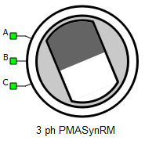
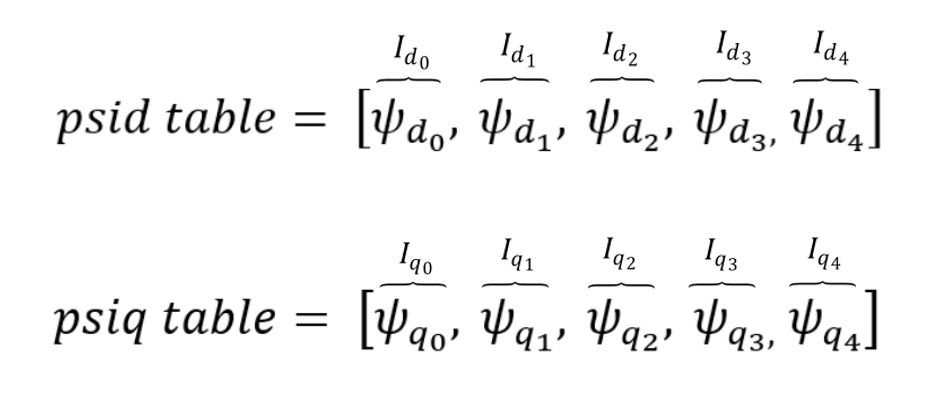
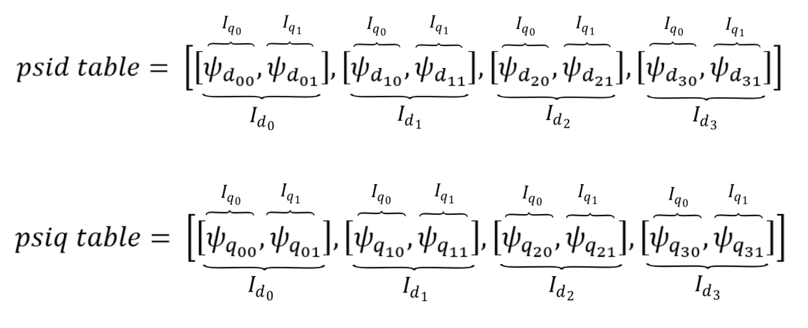
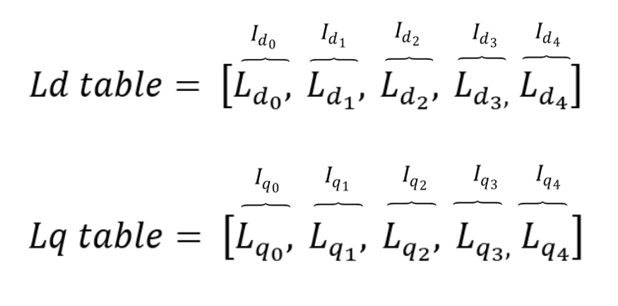
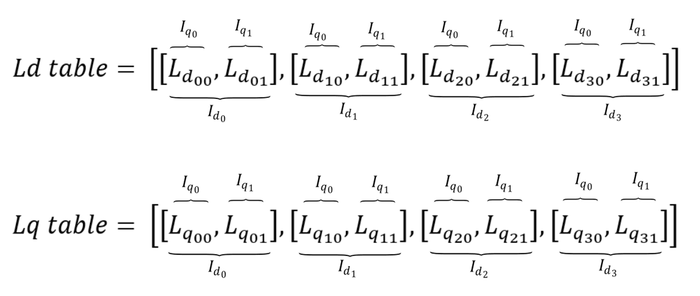
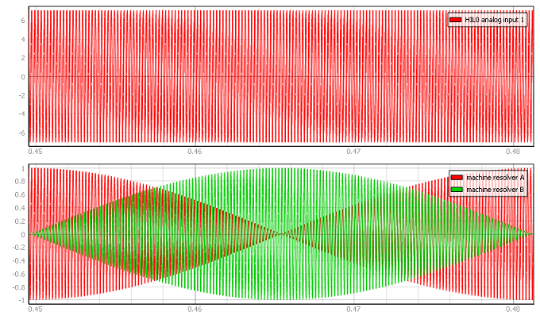
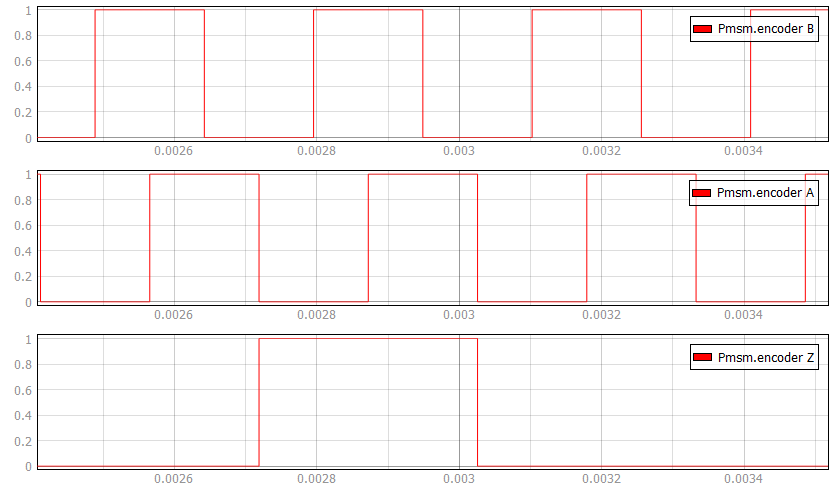
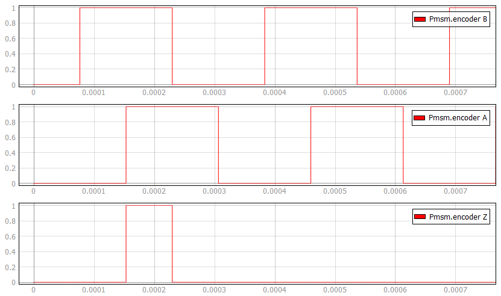
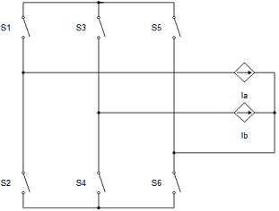
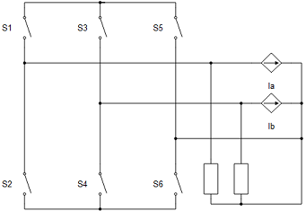

Three Phase Permanent Magnet Assisted Synchronous Reluctance Machine
Description of the Three Phase Permanent Magnet Assisted Synchronous Reluctance Machine component in Schematic Editor.

A, B, and C are stator winding terminals. The stator winding uses the current source interface.
Electrical sub-system model
The electrical part of the machine is represented by the following system of equations, modeled in the rotating dq reference frame. The dq reference frame is attached to the rotor, and the quadrature axis is aligned with the rotor magnets. The modeled dynamics can be represented with the following equations:
| Symbol | Description |
|---|---|
| ψds | Direct axis component of the stator flux [Wb] |
| ψqs | Quadrature axis component of the stator flux [Wb] |
| ψPM | Flux amplitude established in stator phases by rotor permanent magnets [Wb] |
| ids | Direct axis component of the stator current [A] |
| iqs | Quadrature axis component of the stator current [A] |
| vds | Direct axis component of the stator voltage [V] |
| vqs | Quadrature axis component of the stator voltage [V] |
| Rs | Stator phase resistance [Ω] |
| Ld | Direct axis inductance [H] |
| Lq | Quadrature axis inductance [H] |
| ωr | Rotor electrical speed [rad/s] ( ) |
| p | Machine number of pole pairs |
| Te | Machine developed electromagnetic torque [Nm] |
| θm | Rotor mechanical angle [rad] |
Mechanical sub-system model
Motion equation:
| Symbol | Description |
|---|---|
| ωm | Rotor mechanical speed [rad/s] |
| Jm | Combined rotor and load moment of inertia [kgm2] |
| Te | Machine developed electromagnetic torque [Nm] |
| Tl | Shaft mechanical load torque [Nm] |
| b | Machine viscous friction coefficient [Nms] |
| θm | Rotor mechanical angle [rad] |
Saturation effects
The permanent magnet assisted synchronous reluctance machine model can include magnetic saturation effects. In that case, fluxes or inductances are defined as functions of stator currents ids and iqs. These functions are represented in the form of lookup tables. The lookup tables use linear interpolation and linear extrapolation.
- fluxes vs stator currents
- absolute inductances vs stator currents
- incremental inductances vs stator currents

id_vector = [-40.0, -20.0, 0.0, 20.0, 40.0]
iq_vector = [-40.0, -20.0, 0.0, 20.0, 40.0]
psid_table = [-0.0492472, -0.0433668, -0.0425532, -0.0433464, -0.0484104]
psiq_table = [-0.1330824, -0.0838922, 0.0, 0.0838828, 0.133098]
id_vector = [-40.0, -20.0, 0.0, 20.0, 40.0]
iq_vector = [-40.0, -20.0, 0.0, 20.0, 40.0]
psid_table = [[-0.0492472, -0.0433668, -0.0425532, -0.0433464, -0.0484104],
[-0.0115952, -0.0274476, -0.0330376, -0.02771, -0.0126918],
[0.032, 0.032, 0.032, 0.032, 0.032],
[0.064706, 0.0662274, 0.0593586, 0.0677826, 0.0649068],
[0.0805368, 0.0705448, 0.05448328, 0.070713, 0.0812716]]
psiq_table = [[-0.1330824, -0.0838922, 0.0, 0.0838828, 0.133098],
[-0.1313616, -0.1041012, 0.0, 0.1041148, 0.1282268],
[-0.1286288, -0.1076058, 0.0, 0.107, 0.1278272],
[-0.1175936, -0.084391, 0.0, 0.0839394, 0.1162836],
[-0.1092448, -0.0588548, 0.0, 0.0585804, 0.1084576]]
id_vector = [-40.0, -20.0, 0.0, 20.0, 40.0]
iq_vector = [-40.0, -20.0, 0.0, 20.0, 40.0]
Ld_table = [0.00186383, 0.00325188, 0.00399657, 0.00136793, 0.000562082]
Lq_table = [0.00321572, 0.00538029, 0.00779154, 0.00535, 0.00319568]
id_vector = [-40.0, -20.0, 0.0, 20.0, 40.0]
iq_vector = [-40.0, -20.0, 0.0, 20.0, 40.0]
Ld_table = [[0.00203118, 0.00188417, 0.00186383, 0.00188366, 0.00201026],
[0.00217976, 0.00297238, 0.00325188, 0.0029855, 0.00223459],
[0.00226518, 0.00283656, 0.00399657, 0.00280727, 0.00218666],
[0.0016353, 0.00171137, 0.00136793, 0.00178913, 0.00164534],
[0.00121342, 0.00096362, 0.000562082, 0.000967825, 0.00123179]]
Lq_table = [[0.00332706, 0.00419461, 0.0049565, 0.00419414, 0.00332745],
[0.00328404, 0.00520506, 0.00635444, 0.00520574, 0.00320567],
[0.00321572, 0.00538029, 0.00779154, 0.00535, 0.00319568],
[0.00293984, 0.00421955, 0.00547829, 0.00419697, 0.00290709],
[0.00273112, 0.00294274, 0.00323358, 0.00292902, 0.00271144]] Ports
- A (electrical)
- Stator winding phase A port.
- B (electrical)
- Stator winding phase B port.
- C (electrical)
- Stator winding phase C port.
- in
- Available if Model Load source is selected
Electrical (Tab)
- Model Type
- Specifies machine model implementation.
- Two levels of model fidelity are available - linear and nonlinear
- Saturation
- Available if Model Type is set to nonlinear.
- Following saturation types can be specified - flux vs current, absolute inductance vs current, or incremental inductance vs current.
- Rs
- Stator phase resistance [Ω]
- Ld
- Direct axis inductance [H]
- Lq
- Quadrature axis inductance [H]
- Psi_pm
- Flux amplitude established in stator phases by rotor permanent magnets [Wb]
Mechanical (Tab)
- pms
- Machine number of pole pairs
-
Star/delta
- Stator winding connection (star or delta)
- Jm
- Combined rotor and load moment of inertia [kgm2]
- Friction coefficient
- Machine viscous friction coefficient [Nms]
- Unconstrained mechanical angle
- Limiting mechanical angle between 0 and 2π
Load (Tab)
- Load source
- Load source can be set from SCADA/external or from model (in model case, one signal processing input will appear).
- In TyphoonSim, if SCADA/external is chosen as Load source, analog signals are read from the internal virtual IO bus. Hence, if some signal is sent to analog ouput 1, it will appear on analog input 1.
- External/Model load type
- Load type: torque or speed
- Load ai pin
- Load ai pin for external torque/speed command.
- In real-time/VHIL simulation, Load ai pin represent HIL analog input address for external torque command.
- In TyphoonSim, analog signals are read from the internal virtual IO bus. Hence, if some signal is sent to analog ouput 1, it will appear on analog input 1.
- Available only if SCADA/external is set as Load source.
- Load ai offset
- Assigned offset value to the input signal representing external torque command.
- Available only if SCADA/external is set as Load source.
- Load ai gain
- Assigned gain value to the input signal representing external torque command.
- Available only if SCADA/external is set as Load source.
External load enables you to use an analog input signal from a HIL/TyphoonSim (internal virtual IO bus in TyphoonSim) analog channel with the load_ai_pin address as an external torque/speed load, and to assign offset (V) and gain (Nm/V) to the input signal, according to the formula:
Feedback (Tab)
- Encoder ppr
- Incremental encoder number of pulses per revolution
- Encoder Z pulse length
- Z digital signal pulse length in periods. Can be Quarter length or Full period (default)
- Resolver pole pairs
- Resolver number of pole pairs
- Resolver carrier source
- Resolver carrier signal source selection (internal or external)
- Resolver carrier frequency
- Resolver carrier signal frequency (internal carrier) [Hz]
- Available only if the Resolver carrier source property is set to internal
- External resolver carrier source type
- External resolver carrier signal source type selection (single ended or differential)
- Available only if the Resolver carrier source property is set to external
- Resolver ai pin 1
- Resolver carrier input channel 1 address (external carrier)
- Available only if the Resolver carrier source property is set to external
- In TyphoonSim, analog signals are read from the internal virtual IO bus. Hence, if some signal is sent to analog ouput 1, it will appear on analog input 1.
- Resolver ai pin 2
- Resolver carrier input channel 2 address (external carrier)
- Available only if the Resolver carrier source property is set to externaland External resolver carrier source type property is set to differential
- In TyphoonSim, analog signals are read from the internal virtual IO bus. Hence, if some signal is sent to analog ouput 1, it will appear on analog input 1.
- Resolver ai offset
- Resolver carrier input channel offset (external carrier)
- Available only if the Resolver carrier source property is set to external
- In TyphoonSim, analog signals are read from the internal virtual IO bus. Hence, if some signal is sent to analog ouput 1, it will appear on analog input 1.
- Resolver ai gain
- Resolver carrier input channel gain (external carrier)
- Available only if the Resolver carrier source property is set to external
- In TyphoonSim, analog signals are read from the internal virtual IO bus. Hence, if some signal is sent to analog ouput 1, it will appear on analog input 1.
- Absolute encoder protocol
- Standardized protocol providing the absolute machine encoder position.
- Absolute encoder protocol is ignored in TyphoonSim. Changing its value will not affect TyphoonSim simulation at all.
- Singleturn bits
- Number of machine absolute encoder singleturn bits.
- Available only if Absolute encoder protocol is not None.
- Absolute encoder protocol is ignored in TyphoonSim. Changing its value will not affect TyphoonSim simulation at all.
- Enable multiturn
- Enables multiturn absolute encoder support.
- Available only if Absolute encoder protocol is not None.
- Absolute encoder protocol is ignored in TyphoonSim. Changing its value will not affect TyphoonSim simulation at all.
- Multiturn bits
- Number of machine absolute encoder multiturn bits.
- Available only if Enable multiturn is checked.
- Absolute encoder protocol is ignored in TyphoonSim. Changing its value will not affect TyphoonSim simulation at all.
- EnDat/SSI/BiSS clock DI pin
- Clock digital input pin for the chosen absolute encoder protocol type.
- Available only if Absolute encoder protocol is not None.
- Absolute encoder protocol is ignored in TyphoonSim. Changing its value will not affect TyphoonSim simulation at all.
- Clock DI logic
- Clock DI pin logic: active high/active low.
- Available only if Absolute encoder protocol is not None.
- Absolute encoder protocol is ignored in TyphoonSim. Changing its value will not affect TyphoonSim simulation at all.
- EnDat data DI pin
- EnDat data digital input pin.
- Available only if Absolute encoder protocol is EnDat.
- Absolute encoder protocol is ignored in TyphoonSim. Changing its value will not affect TyphoonSim simulation at all.
- Data DI logic
- EnDat data DI pin logic: active high/active low.
- Available only if Absolute encoder protocol is EnDat.
- Absolute encoder protocol is ignored in TyphoonSim. Changing its value will not affect TyphoonSim simulation at all.
If an external resolver carrier source is selected, the source signal type can be set as either single ended or differential. The single ended external resolver carrier source type enables use of an analog input signal from the HIL/TyphoonSim (internal virtual IO bus in TyphoonSim) analog channel with the res_ai_pin_1 address as the external carrier source. Additionally, offset (V) and gain (V/V) values can be assigned to the input signal, according to the formula:
The differential external resolver carrier source type enables use of two analog input signals from the HIL/TyphoonSim (internal virtual IO bus in TyphoonSim) analog channels with the res_ai_pin_1 and the res_ai_pin_2 addresses. Analog signals from these HIL/TyphoonSim (internal virtual IO bus in TyphoonSim) analog inputs are subtracted, and the resulting signal is used as the external differential carrier source. Additionally, offset (V) and gain (V/V) values can be assigned to the input signal (similarly to the single ended case), according to the formula:

The following expression must hold in order to properly generate the encoder signals:
| symbol | description |
|---|---|
| enc_ppr | Encoder number of pulses per revolution |
| fm | Rotor mechanical frequency [Hz] |
| Ts | Simulation time step [s] |


Snubber (Tab)
- Rsnb stator
- Stator snubber resistance value [Ω]
All machines with current source based circuit interfaces have the Snubber tab in the properties window where the value of snubber resistance can be set. Snubbers are necessary in the cases when an inverter or a contactor is directly connected to the machine terminals. This value can be set to infinite (inf), but it is not recommended when a machine is directly connected to the inverter since there will be a current source directly connected to an open switch. In this case, one of each switch pairs S1 and S2, S3 and S4, and S5 and S6 will be forced closed by the circuit solver in order to avoid the topological conflicts. On the other hand, with finite snubber values, there's always a path for the currents Ia and Ib, so all inverter switches can be open in this case. Circuit representations of this circuit without and with snubber resistors are shown in Figure 9 and Figure 10 respectively. Snubbers are connected across the current sources.


Output (Tab)
This block tab enables a single, vectorized signal output from the machine. The output vector contains selected machine mechanical and/or electrical variables in the same order as listed in this tab.
- Execution rate
- Signal processing output execution rate [s]
- Electrical torque
- Machine electrical torque [Nm]
- Mechanical speed
- Machine mechanical angular speed [rad/s]
- Mechanical angle
- Machine mechanical angle [rad]
- Stator alpha axis current
- Alpha axis component of the stator current [A]
- Stator beta axis current
- Beta axis component of the stator current [A]
- Stator d-axis current
- Direct axis component of the stator current [A]
- Stator q-axis current
- Quadrature axis component of the stator current [A]
- Stator alpha axis flux
- Alpha axis component of the stator flux [Wb]
- Stator beta axis flux
- Beta axis component of the stator flux [Wb]
- Stator d-axis flux
- Direct axis component of the stator flux [Wb]
- Stator q-axis flux
- Quadrature axis component of the stator flux [Wb]
Extras (Tab)
The Extras tab gives you the opportunity to set Signal Access Management for the component.
- Public - Components marked as public expose their signals on all levels.
- Protected - Components marked as protected will hide their signals to components outside of their first locked parent component.
- Inherit - Components marked as inherit will take the nearest parent 'signal_access' property value that is set to a value other than inherit.